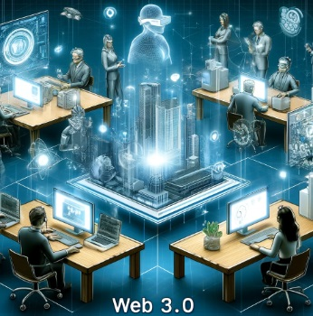

Impacto de las Tecnologías Web en los Negocios
Las tecnologías web han revolucionado los negocios, mejorando la eficiencia y ampliando los mercados.
Transformación Digital
La transformación digital es un proceso mediante el cual las empresas adoptan tecnologías digitales para mejorar sus operaciones y ofrecer más valor a sus clientes. Esto incluye la implementación de software de gestión empresarial, plataformas de comercio electrónico y herramientas de análisis de datos.
Automatización de Procesos
La automatización de procesos permite a las empresas reducir costos y aumentar la eficiencia al automatizar tareas repetitivas y manuales. Ejemplos de esto incluyen la automatización de la atención al cliente mediante chatbots, la gestión automatizada de inventarios y los sistemas de facturación electrónica.
Acceso a Nuevos Mercados
Las tecnologías web han permitido a las empresas acceder a mercados globales con mayor facilidad. Las plataformas de comercio electrónico y las herramientas de marketing digital permiten a las empresas llegar a clientes en todo el mundo, ampliando significativamente su alcance y base de clientes.
Mejora en la Comunicación
Las herramientas de comunicación digital, como el correo electrónico, las videoconferencias y las plataformas de colaboración en línea, han mejorado la comunicación interna y externa de las empresas. Esto facilita la coordinación entre equipos, mejora la toma de decisiones y fortalece las relaciones con los clientes.